Olá eu sou
 

Matheus Fernandes
00000 - PSDB
Siga nas Redes Sociais
Copiar Link
Escanei o QR CODE

PRODUÇÕES LEGISLATIVAS
Este espaço visa mantê-lo informado sobre os principais desenvolvimentos políticos do seu candidato.
Propostas Legislativas
De propria autoria
530
Votações Nominais
Em plenário
165
Discursos
Em plenário
3200
Presença em Plenário
Em plenário
873
Matheus Fernandes
00000 - PSDB
Siga nas Redes Sociais
Copiar Link
Escanei o QR CODE
GALERIA DE FOTOS
Matheus Fernandes
16/08/2023
Lula conversa sobre políticas para as mulheres com ex-líderes do Chile, Costa Rica e Senegal
O presidente Luiz Inácio Lula da Silva, acompanhado da primeira dama, Janja Lula da Silva, recebeu, na tarde desta terça-feira (14), as senhoras Michelle Bachelet, ex-presidenta do Chile e da UNASUL e ex-alta comissária da ONU para Direitos Humanos; Laura Chinchilla, ex-presidenta da Costa Rica; e Aminata Touré, ex-primeira-ministra do Senegal. A visita se deu por ocasião ...
Matheus Fernandes
14/11/2023
Matheus Fernandes em apoio a sua comunidade visita familias da comunidade no Rio de Janeiro
O vereador Matheus Fernandes, acompanhado da primeira dama, Janja Lula da Silva, recebeu, na tarde desta terça-feira (14), as senhoras Michelle Bachelet, ex-presidenta do Chile e da UNASUL e ex-alta comissária da ONU para Direitos Humanos; Laura Chinchilla, ex-presidenta da Costa Rica; e Aminata Touré, ex-primeira-ministra do Senegal. A visita se deu por ocasião ...
Matheus Fernandes
25/12/2023
Matheus Fernandes lança programa de alfabetização com investimento de mais de R$ 2 bilhões
O vereador Matheus Fernandes, acompanhado da primeira dama, Janja Lula da Silva, recebeu, na tarde desta terça-feira (14), as senhoras Michelle Bachelet, ex-presidenta do Chile e da UNASUL e ex-alta comissária da ONU para Direitos Humanos; Laura Chinchilla, ex-presidenta da Costa Rica; e Aminata Touré, ex-primeira-ministra do Senegal. A visita se deu por ocasião ...
Matheus Fernandes
00000 - PSDB
Siga nas Redes Sociais
Copiar Link
Escanei o QR CODE
DEPOIMENTOS
Matheus Fernandes
00000 - PSDB
Siga nas Redes Sociais
Copiar Link
Escanei o QR CODE